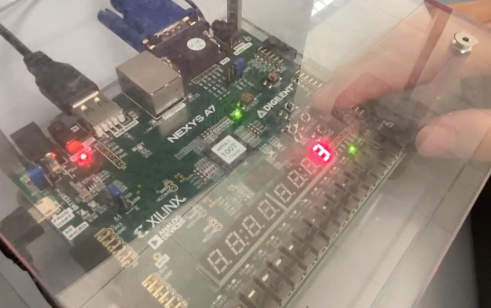

Introduction
This is a Pong Game based on FPGA. Vivado & Verilog were used to develop this project.
Click to Watch the Demo Video
How to Run
Open the project in Vivado and push to FPGA (Artix-7). Make sure that VGA and USB Keyboard are available.

How to Use
To start/pause the game, press button N17. To move the red bar at the bottom, use key A (go left) and D (go right) on a USB keyboard. To adjust the difficulty, press button M17. It goes from 1 to 2 to 3, and then goes back to 1. This can be adjusted before the game starts and during the game. To restart, press button P17. To restart, press button P17. This can be done at any time whether the game ends or not.
Functions
The project is a VGA pong game. The green block is moving in the screen, and will bounce if it goes to the upper/left/right boundary of the screen. If it goes to the lower boundary, the game ends.
The user can move the red bar at the bottom horizontally to catch the green block to prevent it from going to the lower boundary. The red block is controlled by using keyboard, key A and D. Before the game starts, "GO" is displayed on the screen and the green block is moving horizontally.
At this time, the 7-segment display is showing the difficulty of the game. There are totally 3 levels of difficulty. Before and after the game starts, there are 3 LEDs showing the difficulty level. H17 is level 1, K15 is level 2, J13 is level 3. The higher the level is, the speed of the block is higher.
The total time of 1 game is 30s. After the game starts, the right 2 bits of the 7-segment display will count down from 30 to 0. If the time is up, the game ends automatically (the block will disappear), and "GO" will be on the screen. The game can be paused at any time. When it is paused, the green block is moving horizontally in the screen. And the 7-segment display count down will also pause.
The program calculates the angle of reflection when the block goes to the red bar at the bottom, so that the user can control where the green block goes. If the block goes to the red bar at the top of the screen, there will be bonus points. The longer time that the green block overlaps with the red bar, the more bonus points the user will get. The bonus points will be shown on the 7-segment display (the 2 bits on the left).
Situation 1: the red bar is not moving. When the green block bounces at the red bar, the incidence angle is the same as the reflection angle. Situation 2: the red bar is moving in the opposite direction of the green bar (horizontally) when they bounce. The horizontal speed of the green block will increase, and therefore the angle of the reflection angle decreases. The angle can decrease 5 times for maximum. Situation 3: the red bar is moving in the same direction of the green bar (horizontally) when they bounce. The horizontal speed of the green block will decrease, and therefore the angle of the reflection angle increases. If the speed is already the slowest, it will not decrease again.
If the use fails to catch the green block/the green block goes to the lower boundary of the screen, it means game over. The green block will disappear and "DIE" will be on the screen.